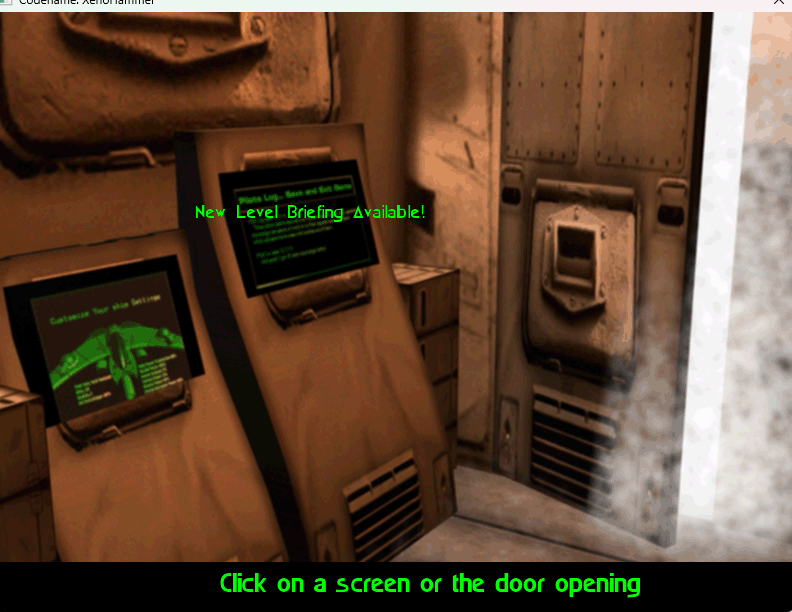
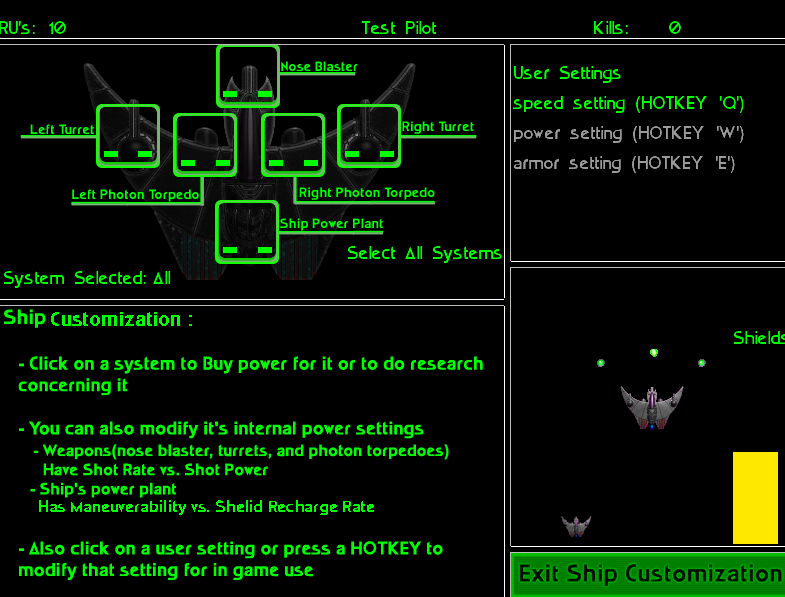
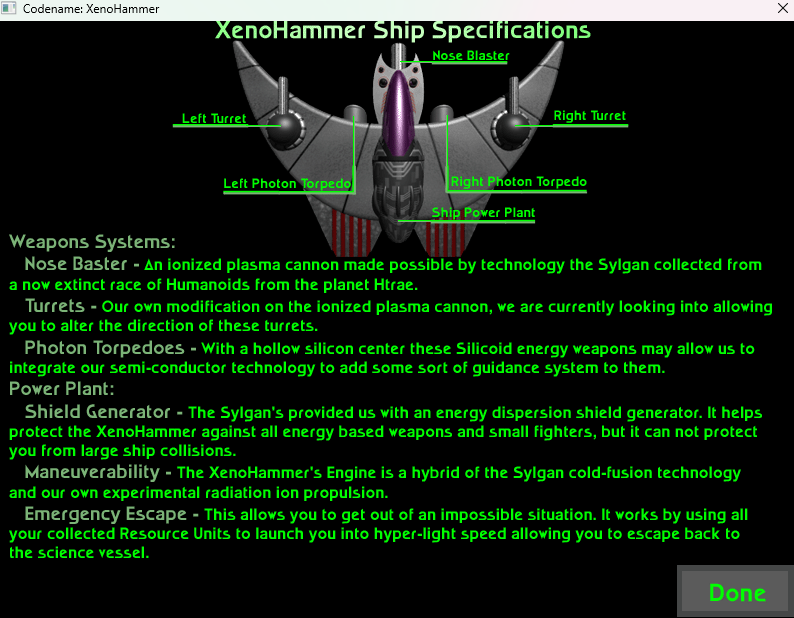
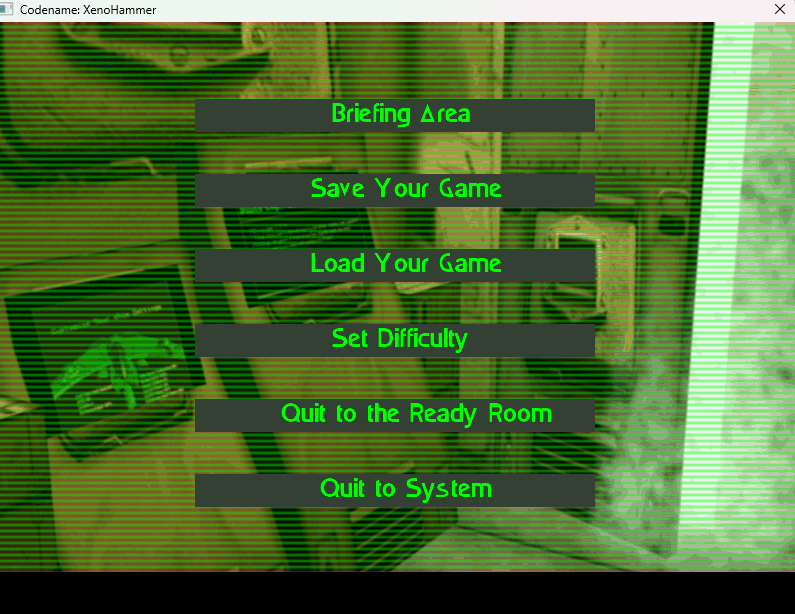
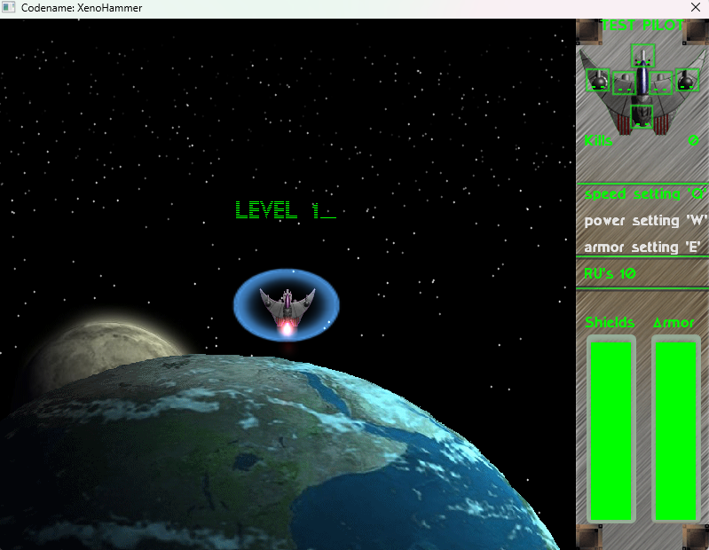
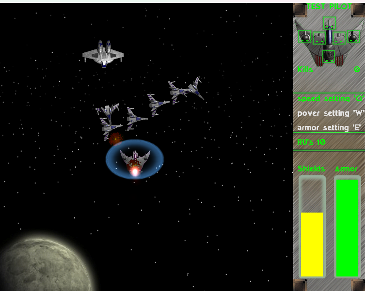
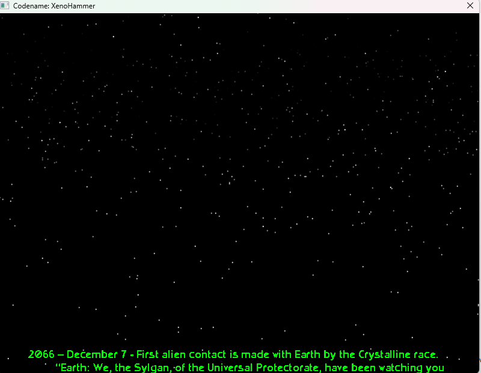
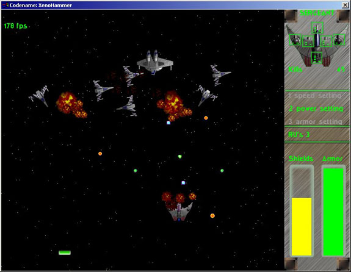
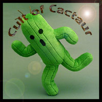

XenoHammer is a top-down 2D space combat arcade shooter, originally developed in C++ by four Georgia Institute of Technology seniors in just 2.5 months as a senior project and résumé piece. It was powered by the ClanLib game libraries with OpenGL enhancements.
The game was selected for the 2002 IGF Student Showcase at the Game Developers Conference in San Jose, CA — one of only 10 student games chosen from 31 entries worldwide.
This tribute site preserves the history of XenoHammer and hosts a fully playable modern web rewrite in TypeScript/Canvas, faithful to the original.
From the original C++/ClanLib/OpenGL version, circa 2001–2002.








Everything we could find about XenoHammer across the internet, preserved here with original source links.
A detailed hands-on writeup by Mason McCuskey of Spin Studios, who visited each student showcase booth at GDC 2002 in San Jose.
Xenohammer is a great implementation of your classic retro top-view space shooter. You've all played these games — you fly up the screen and shoot enemies that come down.🔗 Source: archive.gamedev.net via Wayback Machine
The graphics in Xenohammer are pretty impressive. I especially like the explosions, which are simulated using physics: if a ship blows up when it's moving right the momentum of that movement will also carry the explosion right. It's a great effect that, when combined with some good artwork and particle system code, creates a nice explosion.
Xenohammer was developed by seniors at the Georgia Institute of Technology as a resume piece, designed to help them look for a game job. It took only two and a half months to create.
What Went Right: The short schedule and motivation of the team were a powerful combination in getting a high-quality game out quickly.
What Went Wrong: If they did it over again, the development team would choose to do full 3D instead of just 2D in 3D.
Official announcement of the 10 student games selected for the IGF Student Showcase at GDC 2002, chosen by the Seattle chapter of the IGDA from a pool of 31 entries.
Xenohammer
Developed by B. Smith, C. Haire, J. Shelton, R. Norris, M. Andrew
School: Georgia Institute of Technology
XenoHammer was one of ten games selected alongside titles from DigiPen, University of Waterloo, and other institutions. The showcase took place at GDC 2002 in San Jose, California.
🔗 Source: gamedeveloper.com (formerly Gamasutra)The original Tripod-hosted website for XenoHammer, created by the development team. Archived via the Wayback Machine.
This site is dedicated to the development and playing of the worlds latest and greatest over head shooter XenoHammer. XenoHammer is powered by the awesome ClanLib game libraries.
2002 IGF Student Showcase Selections!
That's right folks XenoHammer has made it into the IGF conference as a student showcase selection!
The site announced the alpha release as "Codename XenoHammerGL" on November 20th, 2001, featuring:
The team page from the original site, listing all four Georgia Tech seniors and their responsibilities.
Our Development team consists of Four Georgia Institute of Technology Seniors.🔗 Source: saberx88.tripod.com/team.htm via Wayback Machine
• Brian Smith — Engine Design
• Chris Haire — Saving/Loading, Sound, Music, Level Design
• Jason Shelton — GUI Design and GUI Artwork, Level Design
• Roger Norris — Artwork and Animations, AI, Level Design
A course on Video Game Design and Programming at SFU lists XenoHammer as a "Past Winning Game" from the IGF Student Showcase, used as an example to inspire students.
Past Winning Games:
XenoHammer — IGF Student Showcase 2002
DOGgone CATastrophe — IGF Student Showcase 2003
KubeKombat — IGF Student Showcase 2004
Growbot — IGF Student Showcase 2004
TeamRobot — IGF Student Showcase 2005
Course taught by Chris Shaw, Ph.D. The slides encouraged students to submit their games to the IGF competition, with $500 travel stipends and a $2,500 Best Student Game award at GDC.
🔗 Source: slideserve.com (IAT 410 presentation)A PDF document in the Georgia Tech digital repository that references "XenoHammer Video Game," confirming the project's presence in the university's academic records.
🔗 Source: repository.gatech.edu (PDF)A forum thread on GameDev.net comparing game libraries (Allegro, ClanLib, PLib) where XenoHammer is mentioned as a ClanLib-powered game, confirming the project's visibility in the indie game development community of the early 2000s.
🔗 Source: gamedev.net/forums (unavailable)The ClanLib game engine's changelog, hosted on Debian Sources, documents the evolution of the engine that powered XenoHammer. ClanLib was a cross-platform C++ game library featuring sprite rendering, sound mixing, input handling, GUI components, and OpenGL integration — the foundation on which XenoHammer was built.
🔗 Source: sources.debian.org (ClanLib changelog)Developed by Cult of Cactaur — four Georgia Institute of Technology seniors, class of 2002.

Cult of Cactaur